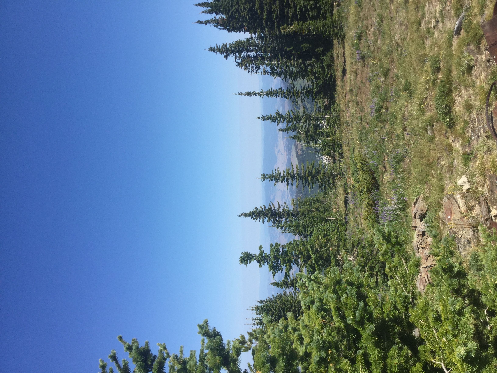
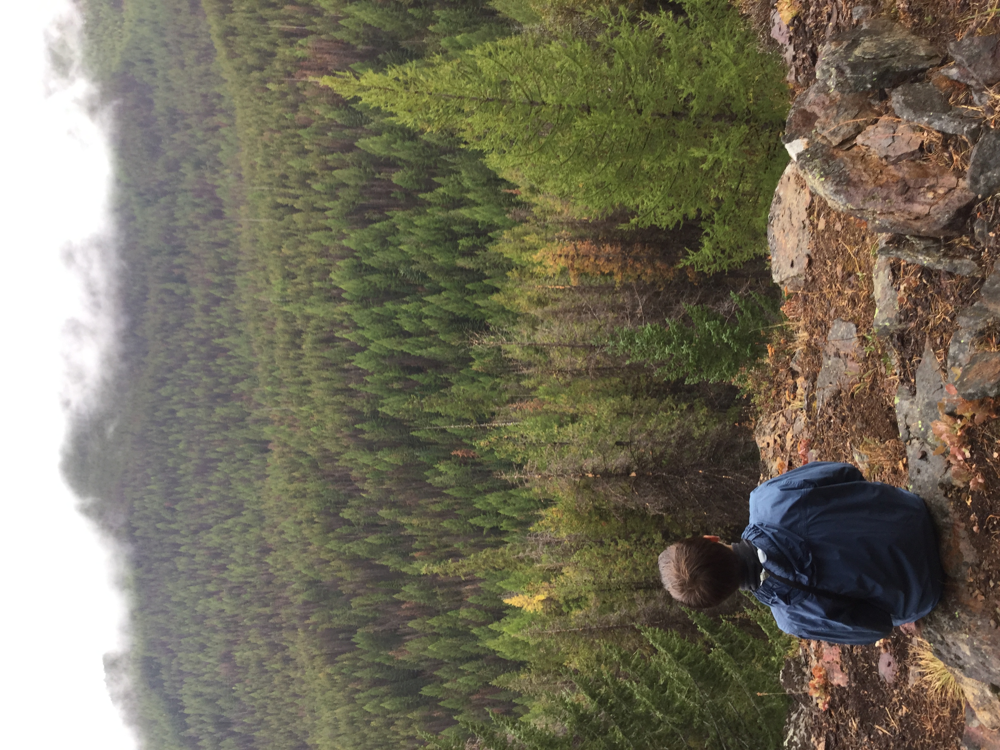

Hiking in Tri-County Washington
Hiking is another area where the Tri-County area shines. Some of my favorite hikes are in the Kettle Crest range so there will be a special emphasis placed on these. Hiking can be an amazing way to spend an afternoon and all of these hikes reward with stunning views.
The Kettle Crest
44 miles in total hiking just a section can be a lot of fun. The Kettle Crest runs along some of the tallest peaks in the area. This hiking is generally fairly strenous due to the nature of the terrain. This range is lower than the cascades so instead of rugged peaks expect to see open fields filled with wild flowers and great views of the surrounding valleys
One of my favorite peaks to bag on the Kettle Crest trail is Columbia Mountain. This is just off of highway 20 and the top rewards you with a stunning view of the area and a rustic cabin that is used by backpackers
Mountain Climbing
Abecrombie
Abecrombie the second highest peak in the area although by only a foot and is well worth the strenous 7.3 mile hike. It is located in Pend Orielle County and one of the only downsides is varying road conditions. The view from the top showcases, Idaho, Canada, and of course a lot of Washington. There are old ruins from a manned ranger station that was demolished in the 60s. The hike itself meanders through the forest to a saddle all the while climbing. The hike follows a few seperate trails so be sure to check you directions before starting.
Sherman Peak
Sherman Peak is located just off of Sherman Pass where highway 20 cuts through the Kettle Crest. The loop that encircles it is 6 miles but you can easily cut off trail to get to the summit. The loop hiking is fairly flat although the hike up to the loop can be strenous. This area burned in the 80s and so you have the opportunity to witness a new forest growing up among the old. The loop offers stunning views but even before the loop the trail cuts through an old forest and past a picteresque stream
Afternoon Strolls
The Log Flume
The Log Flume is located off of Highway 20 and is a paved handicap accessible trail along Sherman Creek. This trail follows along the creek before finally crossing over near the end of the trail which ends at
St. Pauls Mission
See culture
Other hiking
Ferry County Rail Trail
Rails to Trails is located near Curlew WA in Ferry County and is an old train way that has been converted to a trail. The trail itself spans 25 miles but hiking a small section can be enjoyable. The best part about this trail is that it is almost completely flat. Some of the highlights are along Curlew Lake or a section near Curlew that goes through an old train tunnel. This trail is not paved but parts of it (8 miles in total) have been redone to become wheelchair accessible and effots are being made to further renovate the trail
Hoodoo Canyon
This trail is a bit further off of the beaten path but is a popular destination. This hike is 2.5 miles one way through the forest and along the ridge and finally down to Emerald Lake which is seasonal. For this reason this hike is best in early summer especially when many of the higher hikes still have a fair amount of snow. The hike itself has spectacular views of the canyon and the mountain ranges beyond. You can also access Emerald Lake from Trout Lake or to make the Hoodoo Canyon trail longer continue from Emerald Lake to Trout Lake. This hike can be slightly strenous and ticks are a problem in early summer but it's overall a great experience.